MediLink, the Integrated Healthcare System of the Municipality of Oas, keeps your health record in one place and connects you with the Municipal Health Office. As a Patient you can:
keep your personal profile and vital signs up to date, and check your BMI;
see the allergies, diagnoses, medication and diet advice your doctor recorded;
add your own diet plan and family health history;
view and upload your laboratory and imaging files;
follow your readings over time in the Health Graph;
find clinics, their schedules and their doctors; and
see which doctors have permission to view your record.
IMPORTANTSample data only. All patients, doctors, clinics, results and contact details shown in this manual are sample data used for training. They are not real records.
NOTE Screens in this manual were captured from the live system on 24 October 2026 with a patient account. The patient screens did not show an option to book an appointment; appointments are booked at the clinic by the Secretary.
1.2 Signing in
Your account is created when the clinic registers you with your email address. Your email is your username.
Open a web browser and go to medilink.oas.lguapp.com.
On the MediLink home page, click LOGIN at the top right (Figure 1.1).
Sign in with your email and password.
MediLink opens your Profile (Section 2).
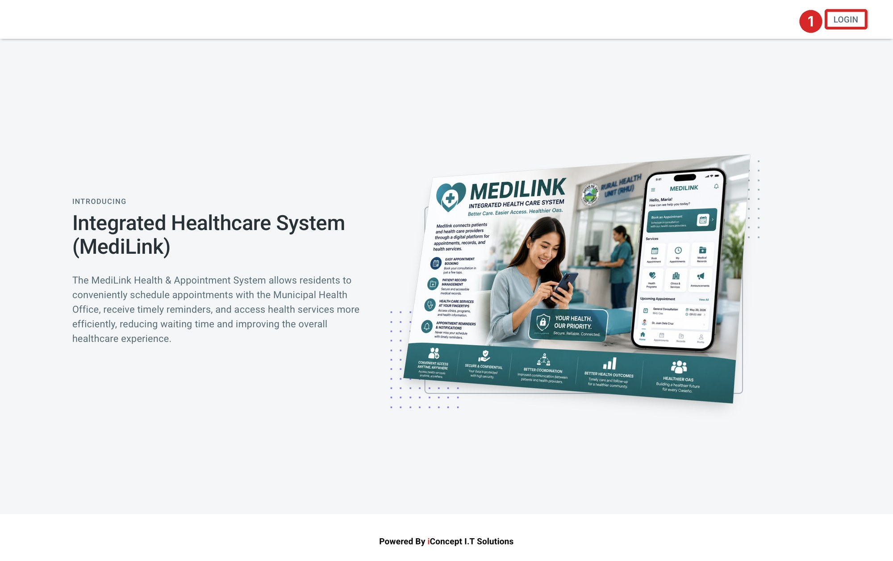
Figure 1.1. The MediLink home page.
1LOGIN button
IMPORTANT If the clinic gave you a default password, change it the first time you sign in (Section 7.3).
1.3 The Patient screen
Figure 1.2. The Patient screen.
1Top bar2Your photo, name and email3Main menu4Account menu5Work area
Menu
What you will find
See
Profile
Your personal details.
2.1
Vitals
Your vital signs and the BMI calculator.
2.2
Allergies, Diagnosis, Medication
Records from your doctor.
3.1 – 3.3
Diet
Diet advice from your doctor and your own diet plan.
3.4
Family History
Health history of your parents and children.
3.5
Laboratory, Imaging
Your test result files.
Section 4
Health Graph
Charts of your readings over time.
Section 5
Clinic List
Clinics, their schedule, location and doctors.
6.1
Permissions
Doctors with access to your record.
6.2
1.4 Account menu and signing out
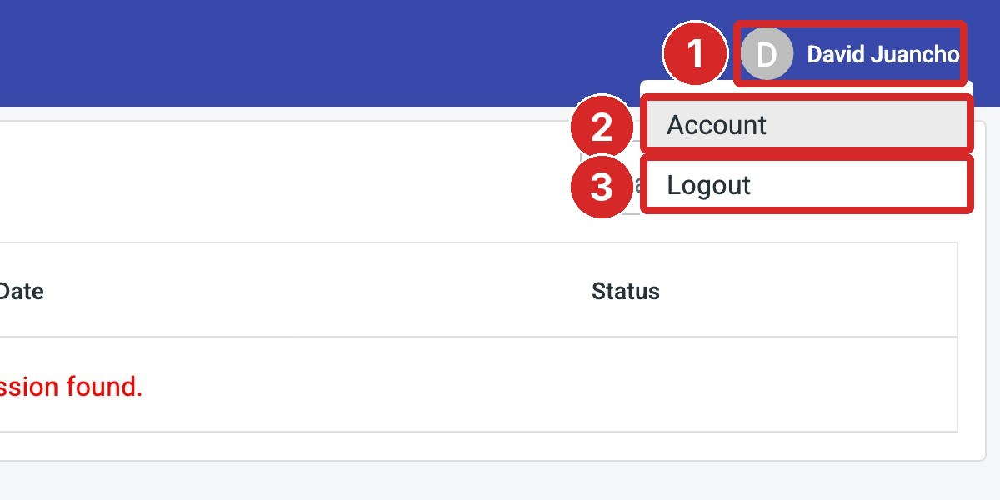
Figure 1.3. The account menu at the top right.
1Account menu2Account3Logout
Click Account to change your profile photo, email or password (Section 7).
Click Logout to sign out. Always sign out on a shared computer or phone.
SECTION 2
Profile and Vitals
Keep your personal details and vital signs up to date so your doctor sees correct information.
Click Profile in the main menu. Your profile shows your name, gender, birthday, birthplace, address, civil status, occupation, religion, mobile and telephone numbers, and under Other Information your height, weight and blood type.
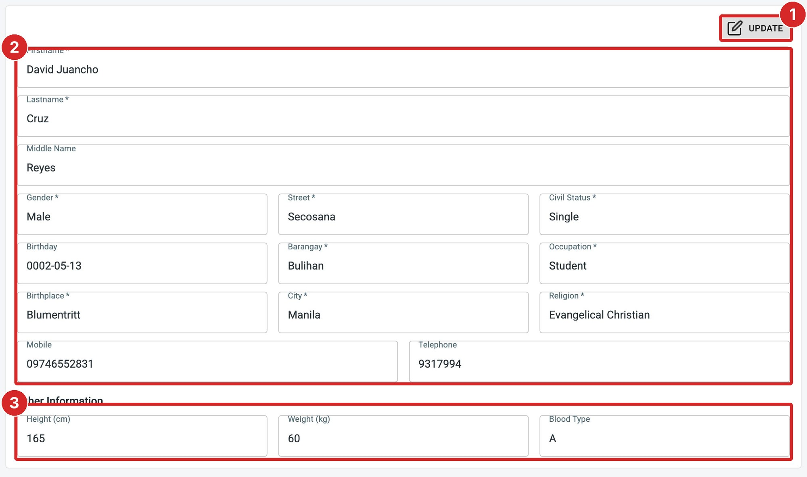
Figure 2.1. Your profile.
1UPDATE2Personal details3Other Information
Click UPDATE. The fields can now be changed.
Correct the details that need updating. Fields marked * are required.
Click SAVE, or NO to discard your changes.
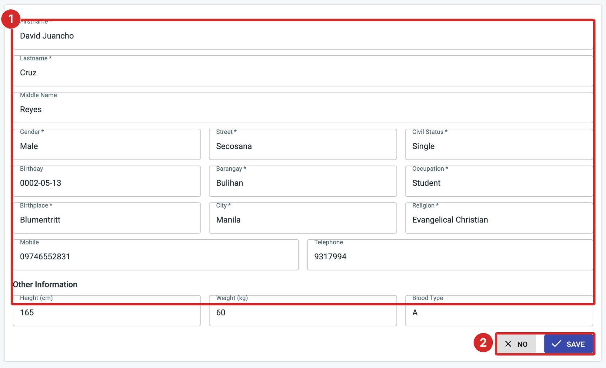
Figure 2.2. Updating your profile.
1Editable details2NO and SAVE
2.2 Vital signs
Click Vitals. The page shows your latest temperature (℃), blood pressure (systolic and diastolic, mmHg), heart pulse, weight (kg), height (cm), glucose, uric acid, respiratory rate, cholesterol and hepatitis status.
Click UPDATE.
Type the readings you measured. For Hepatitis, choose Positive or Negative.
Click SAVE, or CANCEL to discard your changes.
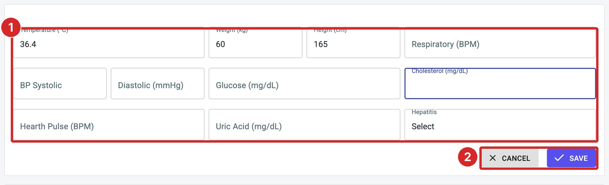
Figure 2.3. Updating your vital signs.
1Readings2CANCEL and SAVE
2.3 BMI calculator
The BMI Calculator on the Vitals page uses your weight and height to work out your Body Mass Index.
Check or change your Weight (kg) and Height (cm).
Click CALCULATE. Your BMI appears under Result, for example 22.04 for 60 kg and 165 cm.
Compare the result with the BMI Assessment table: below 18.5 underweight, 18.5 – 25 healthy, 25 – 30 overweight, 30 – 40 obese, 40+ morbidly obese.
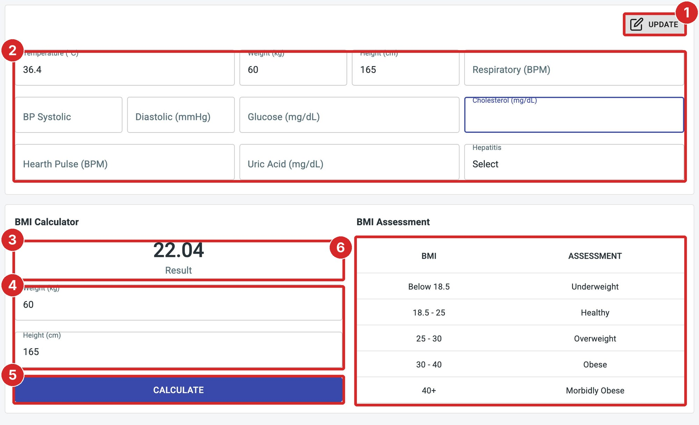
Figure 2.4. The Vitals page with the BMI calculator.
1UPDATE2Vital signs3BMI result4Weight and height5CALCULATE6BMI Assessment
SECTION 3
Records from Your Doctor
These pages show what your doctor recorded, and let you add your own diet plan and family history.
Click Allergies to see your known allergies, for example Penicillin. Only your doctor can add allergies. Tell your doctor if an allergy is missing.
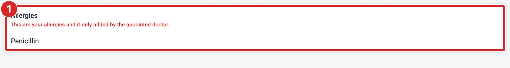
Figure 3.1. Allergies.
1Your allergies
3.2 Diagnosis
Click Diagnosis to see your doctor's diagnoses with their dates. Click the arrow on a row to show or hide the full diagnosis. Only your doctor can add a diagnosis.
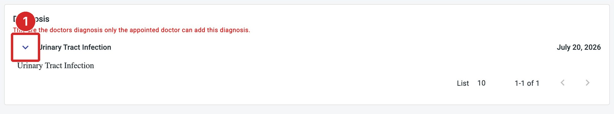
Figure 3.2. Diagnosis, with one row opened.
1Show or hide the details
3.3 Medication
Click Medication to see the medicines your doctor listed for you. Use the arrows at the bottom to page through a long list.
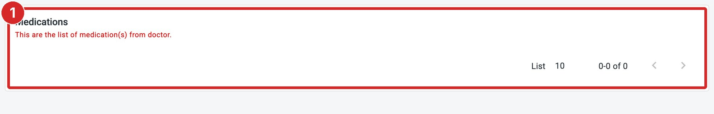
Figure 3.3. Medication.
1Medications from your doctor
3.4 Diet
Click Diet. Suggested Diet on the left shows the diet advice from your doctor. Personal Diet on the right is your own plan.
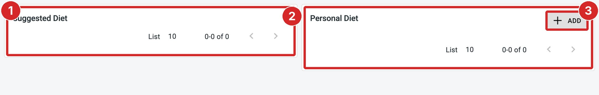
Figure 3.4. Diet.
1Suggested Diet (from your doctor)2Personal Diet (your own)3ADD
Click ADD under Personal Diet.
Choose the Meals: Breakfast, Lunch or Dinner.
Type what you eat under Description (required).
Click SAVE, or CLOSE to cancel.
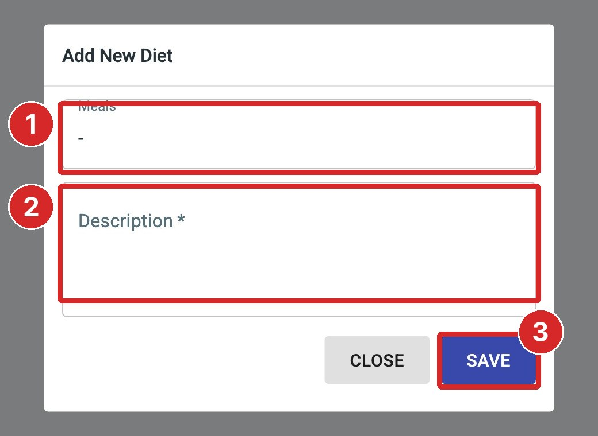
Figure 3.5. The Add New Diet window.
1Meals2Description3SAVE
3.5 Family History
Click Family History to record the health of your family. This helps your doctor spot conditions that run in families.
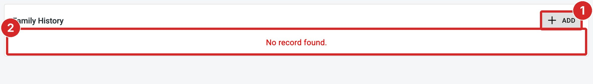
Figure 3.6. Family History.
1ADD2Family members
Click ADD.
Choose the Category: Father, Mother or Children.
Type the family member's Full name, Address, Birthday and Occupation.
Describe his or her Health Condition, and choose the Current Status: Alive or Deceased.
Click Laboratory or Imaging. Each row shows the description, the date and who added it (for example patient, secretary or imaging). Click the arrow on a row to show or hide its images.
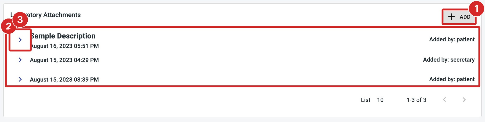
Figure 4.1. Laboratory attachments.
1ADD2Attachments3Show or hide the images
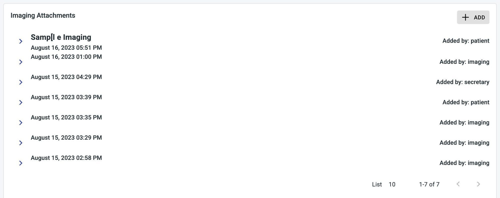
Figure 4.2. Imaging attachments.
4.2 Uploading a file
Click ADD. The Upload images panel opens.
Type a Description, for example the test name and date.
Drag your file onto the box, or click browse and choose it.
Click UPLOAD.
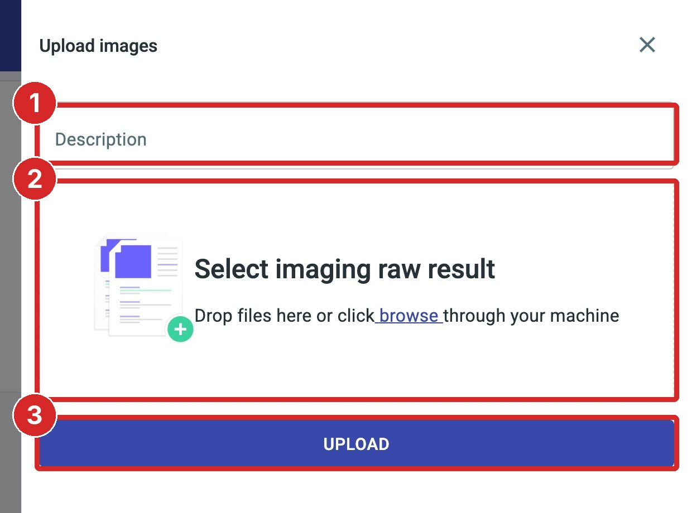
Figure 4.3. The Upload images panel.
1Description2File drop area3UPLOAD
NOTE When this manual was prepared, opened rows showed broken image icons, and the panel says Select imaging raw result on the Laboratory page too.
SECTION 5
Health Graph
The Health Graph turns your readings into charts so you and your doctor can see how they change over time.
Click Health Graph. Each card explains one reading: Pain, Respiratory, Uric Acid, HDL, Potassium, Temperature, Weight, Calcium, LDL, Protein, Blood Pressure, Glucose, Chloride, Lithium, Sodium, Pulse, Cholesterol, Creatinine and Magnesium. Click DETAILS on a card to open its chart.
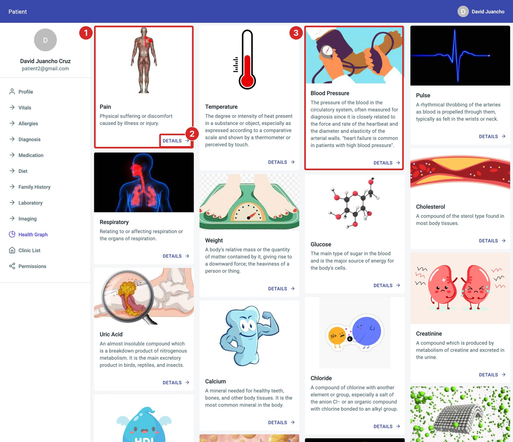
Figure 5.1. The Health Graph.
1A reading card2DETAILS3Blood Pressure card
5.2 Reading a chart
The chart plots your recorded values over time. No record under the chart means no values have been saved for that reading yet. Use your browser's Back button to return to the cards.
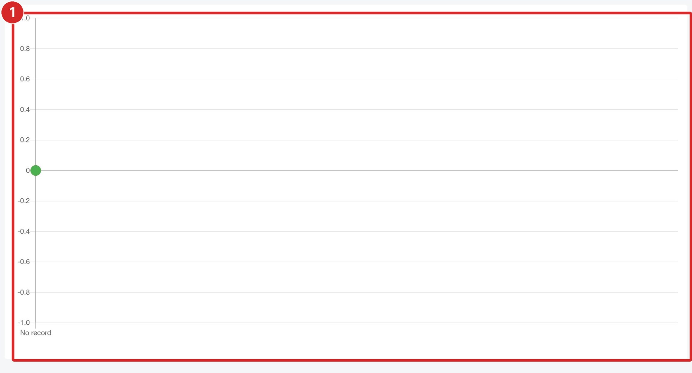
Figure 5.2. The Blood Pressure chart.
1Chart
SECTION 6
Clinics and Permissions
Find a clinic and its doctors, and see which doctors can view your record.